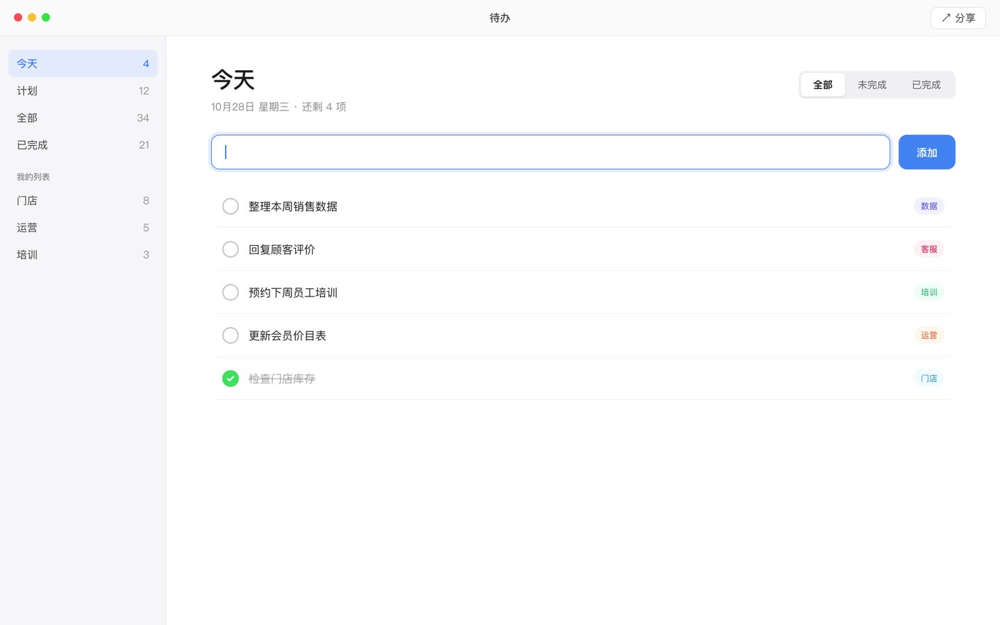
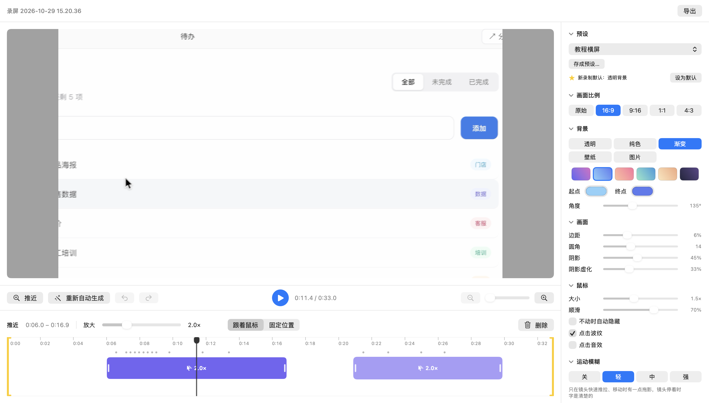

录屏
我自己做的录屏软件
Mac
Windows
录屏
录什么
选区域…
刷新列表
🖥
整个屏幕
内建显示器 · 2880 × 1800
▭
待办
待办 · 1440 × 900
▭
备忘录
备忘录 · 1200 × 800
⬚
框选的区域
1280 × 720
录电脑声音
录麦克风
显示鼠标
Studio 效果
倒计时
关
3 秒
5 秒
隐藏桌面图标
开始录制
●
00:03
⌥⌘R 开始 / 停止
保存到：影片 / 录屏
打开 Studio 素材…
打开文件夹
↓
新版本 v1.5 已下载，退出后自动换上
更新说明
现在重启
3

录下来的样子
打开 Studio 效果以后

0:11.4 / 0:33.0
正在导出 0%
内置
透明背景（新录制默认）
抖音竖屏
✓
教程横屏
方形
我的预设
调好样式后点「存成预设…」就能存下来
横屏教程
抖音竖屏
待办
—▢✕
文件传输助手
—▢✕
本周的待办清单发我一下
Ctrl
+
Alt
+
X
截图
录屏
录完，就是成片。
Mac
Windows